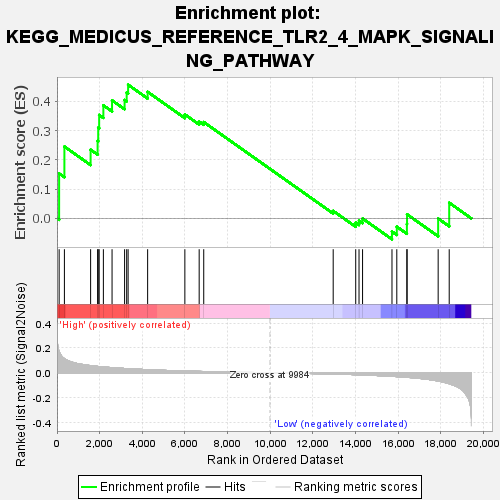
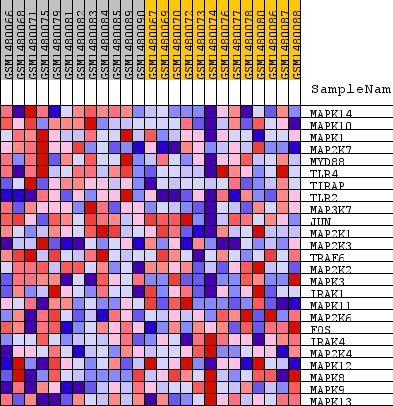
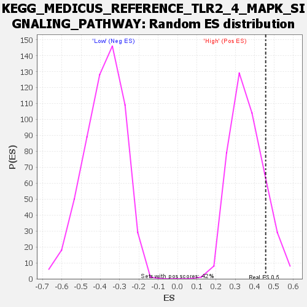

| Dataset | WG6v3.CPT1A.cls#High_versus_Low.CPT1A.cls#High_versus_Low_repos |
| Phenotype | CPT1A.cls#High_versus_Low_repos |
| Upregulated in class | High |
| GeneSet | KEGG_MEDICUS_REFERENCE_TLR2_4_MAPK_SIGNALING_PATHWAY |
| Enrichment Score (ES) | 0.45693025 |
| Normalized Enrichment Score (NES) | 1.2754972 |
| Nominal p-value | 0.1485849 |
| FDR q-value | 1.0 |
| FWER p-Value | 1.0 |

| SYMBOL | TITLE | RANK IN GENE LIST | RANK METRIC SCORE | RUNNING ES | CORE ENRICHMENT | |
|---|---|---|---|---|---|---|
| 1 | MAPK14 | MAPK14 | 100 | 0.172 | 0.1534 | Yes |
| 2 | MAPK10 | MAPK10 | 347 | 0.114 | 0.2455 | Yes |
| 3 | MAPK1 | MAPK1 | 1576 | 0.057 | 0.2347 | Yes |
| 4 | MAP2K7 | MAP2K7 | 1904 | 0.051 | 0.2648 | Yes |
| 5 | MYD88 | MYD88 | 1932 | 0.051 | 0.3100 | Yes |
| 6 | TLR4 | TLR4 | 1977 | 0.050 | 0.3536 | Yes |
| 7 | TIRAP | TIRAP | 2174 | 0.047 | 0.3866 | Yes |
| 8 | TLR2 | TLR2 | 2581 | 0.041 | 0.4034 | Yes |
| 9 | MAP3K7 | MAP3K7 | 3169 | 0.034 | 0.4047 | Yes |
| 10 | JUN | JUN | 3267 | 0.033 | 0.4303 | Yes |
| 11 | MAP2K1 | MAP2K1 | 3334 | 0.033 | 0.4569 | Yes |
| 12 | MAP2K3 | MAP2K3 | 4249 | 0.025 | 0.4326 | No |
| 13 | TRAF6 | TRAF6 | 5994 | 0.014 | 0.3554 | No |
| 14 | MAP2K2 | MAP2K2 | 6665 | 0.011 | 0.3309 | No |
| 15 | MAPK3 | MAPK3 | 6879 | 0.010 | 0.3292 | No |
| 16 | IRAK1 | IRAK1 | 12948 | -0.010 | 0.0255 | No |
| 17 | MAPK11 | MAPK11 | 14004 | -0.015 | -0.0149 | No |
| 18 | MAP2K6 | MAP2K6 | 14159 | -0.016 | -0.0079 | No |
| 19 | FOS | FOS | 14325 | -0.017 | -0.0005 | No |
| 20 | IRAK4 | IRAK4 | 15704 | -0.029 | -0.0452 | No |
| 21 | MAP2K4 | MAP2K4 | 15930 | -0.031 | -0.0285 | No |
| 22 | MAPK12 | MAPK12 | 16403 | -0.036 | -0.0194 | No |
| 23 | MAPK8 | MAPK8 | 16411 | -0.036 | 0.0137 | No |
| 24 | MAPK9 | MAPK9 | 17869 | -0.066 | -0.0007 | No |
| 25 | MAPK13 | MAPK13 | 18387 | -0.088 | 0.0534 | No |

